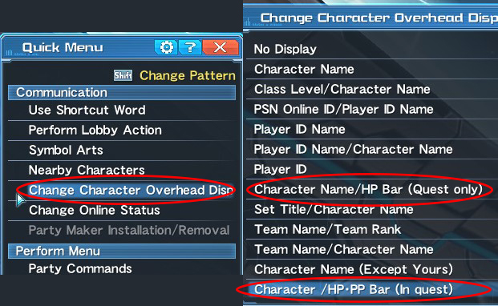

Game Updates
- New Endless Quest (March 6): Endless: Eternal Rondo
- KOF Legends AC Scratch
- Buster Quest reworks
Helpful Resources
My Other Sites
Contact
Email me if you have any questions or comments:
thatstraveling@gmail.comIntroduction to Techer
What is Techer?
| Deband (Ice) | AOE cast around the player that gives nearby allies a defensive buff. |
|---|---|
| Shifta (Fire) | AOE cast around the player that gives nearby allies damage buff. |
| Resta (Light) | AOE cast around the player that heals nearby allies. |
| Zanverse (Wind) | AOE cast where the player stands that creates a static circular field. When a player stands in it, adds bonus wind damage for every hit. |
| Anti (Light) | AOE cast around the player, similar to Resta, but instead of healing, removes any status effects or debuffs on nearby allies. |
| Zondeel (Lightning) | AOE that drops like Zanverse, but pulls trash mobs and weaker bosses into it's center. Can be activated by another lightning tech to deal damage. Very good crowd control. |
| Megiverse (Dark) | AOE that drops like Zanverse, rather than adding damage per hit, it heals players HP per hit. Depending on the damage dealt, it can instantly heal a player in one hit. |
Techer is the backbone of the group. It's a support role that should focus on buffing and healing players. aside from that, the Techer's wand deals massive damage to groups of mobs. Compared to other games in the genre, support roles aren't as necessary or as important as pure DPS (Damage per second), so it is not uncommon to get into a raid without a techer. However, this doesn't mean Techers do not play an important role and should be tossed aside. A good techer can increase the DPS of everyone, keep them from dying, and has great crowd control.
How do you play techer?
There are around 7 techs that Techers must learn to cast listed in the table above (in no particular order).
Shifta and Deband should be applied and refreshed to players at all times. Other tech casting classes can cast them, but Techers application of it is much stronger. There are skills in the tree that allow Deband to give players more HP, and Shifta to increase critical hit rate, and overall increase the effectiveness of the techs. When fighting, always be on the lookout for other player's HP and be sure to cast Resta and Megiverse whenever health seems to be low. By default, there are no overhead player health bars, but you can turn them on by going to the quick menu as shown below.
As far as dealing damage goes, you should cast Zondeel whenever you see a group of mobs. It's recommended that you charge the cast to increase its range. Once the mobs are trapped in the middle, use your wand's main attack and you'll see some big damage. Cast Zanverse whenever the group's position is stationary. In other words, if a boss or mobs are scattered or moving around, Zanverse is not worth your time to cast. But if the mobs are trapped in a Zondeel for example, a Zanverse could really increase DPS. Likewise, during a boss' stun phase or DPS check in a fight, Zanverse is a must. This is the basic playstyle of a Techer. Now I will show you how to build your tree.
Skill Tree
The most solid subclass for a Techer is Hunter. This doesn't allow damage dealing techs to really be useable with Techer, making wand smacks your main source of damage, but that is fine as Techer is mainly a support role, and wand damage with Zondeel is some of the best crowd control in the game.
I have made a very basic skill tree with the Arks-Layer skill tree simulator that you can view here. The Techer tree's priority is the support skills. Increasing the effectiveness of the support techs is the main goal of the Techer tree. The rest of the points go into damage and maximizing the wand. There are a few skill points I did not put into the trees. You can put these into Striking Up or more utility.
The Hunter sub tree is mostly increasing damage through the JA bonus and Fury Stance option. Aside from that, I suggest using the other SP on getting Massive Hunter. It really helps keep you on your feet, and Techers don't really have a lot of defenses otherwise. Because of this, I also suggest getting Iron Will in case things get dicey. Other points can go into utility or S-ATK.
Now that you know a little more about the Techer class, get out into the field! We need more Techers. Good luck.